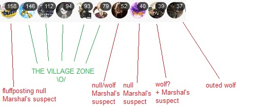

Both arbiter and starter visionary can’t get found by marshal


Funny how they are all lowest posters and the only one above the bottom five is a fluffposter.
1 Like
I’m pretty sure I caught your class soft and if I’m right you’re a villager
If we have any Herbalists and they exhume Marshal, we’ll know D3 who killed Marshal. Arbiter and Visionary are BD/HoB equivalent of Mastermind, they are detection immune.
I think you’re a villager. I’m not the person you should be trying to convince.
I am going to sleep, bye. Villagers and Arete, the fakeclaming neutral, take over.
2 Likes

Alright, refute time:
Sorry for the weird format, it helps me organize my thoughts
- “Darth’s insistence on lynching Sulit anyway was rather wolfy”
- I see where you and Frost are coming from with the possibility of sulit being Rebel (I will give y’all that). However, I do/diid not think there is enough evidence to convince me of it. Yes, we could leave it up to Duke, but then in the case that sulit is Unseen, they lose their execution ability (is there also a limit on that?). We could let Possessed do the kill tonight, but I don’t trust Possessed and their claim enough to leave that to them. In the unlikely case that sulit is Unseen, lynching them also gives us another lynch, which would clear Arete and allow us to continue. Thus, I viewed it as more beneficial to the Unseen to lynch sulit today instead of leaving it to the night.
- “Wolves have a tendency to be more marrow-minded in their views”
- Can’t really argue this point, I see it as mostly true. However, we can tell that I’m not really the best at game solving, so I think this is something to discount.
- " ‘I want sulit lynched asap so the day can end.’ Which is anti-village and pro-wolf"
- I don’t really understand why this is pro-wolf. Everyone here wants sulit killed, so just bc I want them killed during the day instead of at night doesn’t make me more wolfy. You suggest that I want to end the day early, which I agree would benefit scum, however, I did not advocate for ending the day early. I specifically stated that we should continue game solving, but that sulit should be the definitive lynch. I am not trying to take away the time we have right now.
- (in response to ‘Arete would never bus’) "This defense of Arete combined with my recent suspicions concerning Arete make me even more suspicious.
- This was intended as a joke. It is somewhat of an inside joke (not with anyone here tho), so I get why you would take it more seriously.
- “She is not trying to solve people’s alignments, she just wants the lynch to be sulit, which I find rather wolfy.”
- I am! I’m not projecting much bc I’m confused and somewhat busy, but I am trying to game solve rn, even though I’m bad at it. My game solving is largely based on pointing out somewhat strange or linking behavior, the bulk of which I do not want to reveal at this time because it is either (a) partially omgus or (b) part of a plan I have that I do not intend to divulge atm.
And as for my stance on the lynch, based on arguments presented while I was gone, it has been made apparent that a sulit Unseen flip with successful bounty does not necessarily confirm Arete. I have my own reasons to believe Arete atm, but I do want to acknowledge the possibility here.